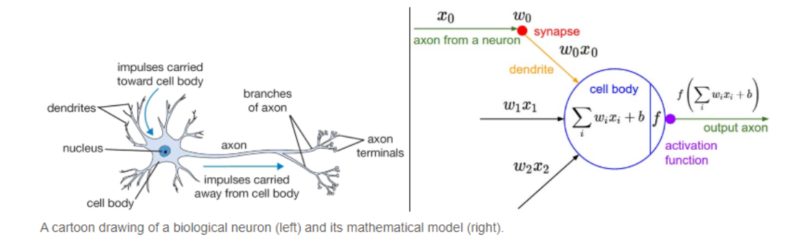
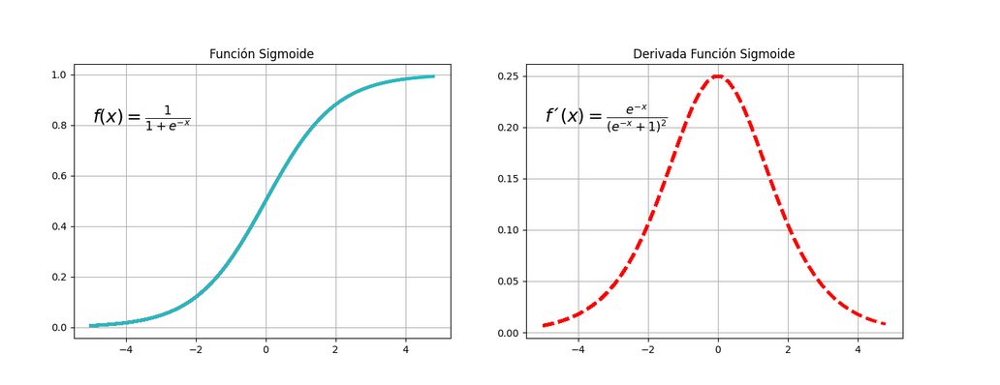
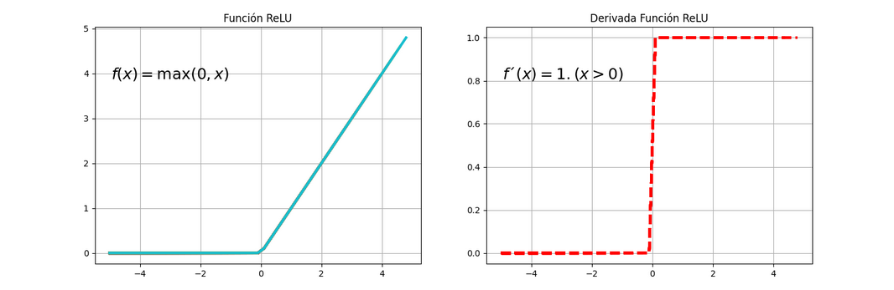

Se está convirtiendo una variable llamada “V2” en un factor en un conjunto de datos. Luego, se esta utilizando la función complete.cases() para verificar la cantidad de casos completos en ese conjunto de datos.
# Convertir la columna "V2" a factor y asignarla a "clase"dataset$V2 <-as.factor(dataset$V2)length(complete.cases(dataset))
[1] 569
1. Descripción de los mismos numérica y gráficamente
Se obtendra un resumen de cada columna o variable en el conjunto de datos. El resumen incluiría estadísticas descriptivas como el valor mínimo, el primer cuartil, la mediana, el tercer cuartil y el valor máximo para variables numéricas.
summary(dataset)
V1 V2 V3 V4 V5
Min. : 8670 B:357 Min. : 6.981 Min. : 9.71 Min. : 43.79
1st Qu.: 869218 M:212 1st Qu.:11.700 1st Qu.:16.17 1st Qu.: 75.17
Median : 906024 Median :13.370 Median :18.84 Median : 86.24
Mean : 30371831 Mean :14.127 Mean :19.29 Mean : 91.97
3rd Qu.: 8813129 3rd Qu.:15.780 3rd Qu.:21.80 3rd Qu.:104.10
Max. :911320502 Max. :28.110 Max. :39.28 Max. :188.50
V6 V7 V8 V9
Min. : 143.5 Min. :0.05263 Min. :0.01938 Min. :0.00000
1st Qu.: 420.3 1st Qu.:0.08637 1st Qu.:0.06492 1st Qu.:0.02956
Median : 551.1 Median :0.09587 Median :0.09263 Median :0.06154
Mean : 654.9 Mean :0.09636 Mean :0.10434 Mean :0.08880
3rd Qu.: 782.7 3rd Qu.:0.10530 3rd Qu.:0.13040 3rd Qu.:0.13070
Max. :2501.0 Max. :0.16340 Max. :0.34540 Max. :0.42680
V10 V11 V12 V13
Min. :0.00000 Min. :0.1060 Min. :0.04996 Min. :0.1115
1st Qu.:0.02031 1st Qu.:0.1619 1st Qu.:0.05770 1st Qu.:0.2324
Median :0.03350 Median :0.1792 Median :0.06154 Median :0.3242
Mean :0.04892 Mean :0.1812 Mean :0.06280 Mean :0.4052
3rd Qu.:0.07400 3rd Qu.:0.1957 3rd Qu.:0.06612 3rd Qu.:0.4789
Max. :0.20120 Max. :0.3040 Max. :0.09744 Max. :2.8730
V14 V15 V16 V17
Min. :0.3602 Min. : 0.757 Min. : 6.802 Min. :0.001713
1st Qu.:0.8339 1st Qu.: 1.606 1st Qu.: 17.850 1st Qu.:0.005169
Median :1.1080 Median : 2.287 Median : 24.530 Median :0.006380
Mean :1.2169 Mean : 2.866 Mean : 40.337 Mean :0.007041
3rd Qu.:1.4740 3rd Qu.: 3.357 3rd Qu.: 45.190 3rd Qu.:0.008146
Max. :4.8850 Max. :21.980 Max. :542.200 Max. :0.031130
V18 V19 V20 V21
Min. :0.002252 Min. :0.00000 Min. :0.000000 Min. :0.007882
1st Qu.:0.013080 1st Qu.:0.01509 1st Qu.:0.007638 1st Qu.:0.015160
Median :0.020450 Median :0.02589 Median :0.010930 Median :0.018730
Mean :0.025478 Mean :0.03189 Mean :0.011796 Mean :0.020542
3rd Qu.:0.032450 3rd Qu.:0.04205 3rd Qu.:0.014710 3rd Qu.:0.023480
Max. :0.135400 Max. :0.39600 Max. :0.052790 Max. :0.078950
V22 V23 V24 V25
Min. :0.0008948 Min. : 7.93 Min. :12.02 Min. : 50.41
1st Qu.:0.0022480 1st Qu.:13.01 1st Qu.:21.08 1st Qu.: 84.11
Median :0.0031870 Median :14.97 Median :25.41 Median : 97.66
Mean :0.0037949 Mean :16.27 Mean :25.68 Mean :107.26
3rd Qu.:0.0045580 3rd Qu.:18.79 3rd Qu.:29.72 3rd Qu.:125.40
Max. :0.0298400 Max. :36.04 Max. :49.54 Max. :251.20
V26 V27 V28 V29
Min. : 185.2 Min. :0.07117 Min. :0.02729 Min. :0.0000
1st Qu.: 515.3 1st Qu.:0.11660 1st Qu.:0.14720 1st Qu.:0.1145
Median : 686.5 Median :0.13130 Median :0.21190 Median :0.2267
Mean : 880.6 Mean :0.13237 Mean :0.25427 Mean :0.2722
3rd Qu.:1084.0 3rd Qu.:0.14600 3rd Qu.:0.33910 3rd Qu.:0.3829
Max. :4254.0 Max. :0.22260 Max. :1.05800 Max. :1.2520
V30 V31 V32
Min. :0.00000 Min. :0.1565 Min. :0.05504
1st Qu.:0.06493 1st Qu.:0.2504 1st Qu.:0.07146
Median :0.09993 Median :0.2822 Median :0.08004
Mean :0.11461 Mean :0.2901 Mean :0.08395
3rd Qu.:0.16140 3rd Qu.:0.3179 3rd Qu.:0.09208
Max. :0.29100 Max. :0.6638 Max. :0.20750
La función str() proporciona un resumen conciso que incluye el nombre de cada variable, su tipo de dato y una vista previa de los primeros valores en cada columna.
str(dataset)
'data.frame': 569 obs. of 32 variables:
$ V1 : int 842302 842517 84300903 84348301 84358402 843786 844359 84458202 844981 84501001 ...
$ V2 : Factor w/ 2 levels "B","M": 2 2 2 2 2 2 2 2 2 2 ...
$ V3 : num 18 20.6 19.7 11.4 20.3 ...
$ V4 : num 10.4 17.8 21.2 20.4 14.3 ...
$ V5 : num 122.8 132.9 130 77.6 135.1 ...
$ V6 : num 1001 1326 1203 386 1297 ...
$ V7 : num 0.1184 0.0847 0.1096 0.1425 0.1003 ...
$ V8 : num 0.2776 0.0786 0.1599 0.2839 0.1328 ...
$ V9 : num 0.3001 0.0869 0.1974 0.2414 0.198 ...
$ V10: num 0.1471 0.0702 0.1279 0.1052 0.1043 ...
$ V11: num 0.242 0.181 0.207 0.26 0.181 ...
$ V12: num 0.0787 0.0567 0.06 0.0974 0.0588 ...
$ V13: num 1.095 0.543 0.746 0.496 0.757 ...
$ V14: num 0.905 0.734 0.787 1.156 0.781 ...
$ V15: num 8.59 3.4 4.58 3.44 5.44 ...
$ V16: num 153.4 74.1 94 27.2 94.4 ...
$ V17: num 0.0064 0.00522 0.00615 0.00911 0.01149 ...
$ V18: num 0.049 0.0131 0.0401 0.0746 0.0246 ...
$ V19: num 0.0537 0.0186 0.0383 0.0566 0.0569 ...
$ V20: num 0.0159 0.0134 0.0206 0.0187 0.0188 ...
$ V21: num 0.03 0.0139 0.0225 0.0596 0.0176 ...
$ V22: num 0.00619 0.00353 0.00457 0.00921 0.00511 ...
$ V23: num 25.4 25 23.6 14.9 22.5 ...
$ V24: num 17.3 23.4 25.5 26.5 16.7 ...
$ V25: num 184.6 158.8 152.5 98.9 152.2 ...
$ V26: num 2019 1956 1709 568 1575 ...
$ V27: num 0.162 0.124 0.144 0.21 0.137 ...
$ V28: num 0.666 0.187 0.424 0.866 0.205 ...
$ V29: num 0.712 0.242 0.45 0.687 0.4 ...
$ V30: num 0.265 0.186 0.243 0.258 0.163 ...
$ V31: num 0.46 0.275 0.361 0.664 0.236 ...
$ V32: num 0.1189 0.089 0.0876 0.173 0.0768 ...
# Crear el gráfico de boxplotboxplot(dataset[, -1], col ="lightblue", main ="Distribución de variables", xlab ="Variables", ylab ="Valores")
Este código generaría una ventana gráfica con 2 filas y 4 columnas, mostrando boxplots para las variables del conjunto de datos agrupadas de 5 en 5. Cada boxplot mostraría la distribución de los valores de las variables correspondientes.
# Create a list with the variable names of the datasetvariables <-names(dataset)[-2] # Exclude the first column# Divide the variables into groups of 5grupos <-split(variables, ceiling(seq_along(variables) /2))# Create a graphic window with 2 rows and 4 columns for the boxplotspar(mfrow =c(2, 4))# Create the boxplotsfor (i inseq_along(grupos)) {boxplot(dataset[, grupos[[i]]], col ="lightblue", main =paste("Boxplot", i),xlab ="Variables", ylab ="Valores")}
Interpretacion
Estos gráficos muestran la distribución de los valores de las variables del primer grupo. Los cuartiles y la mediana se representan mediante los componentes de la caja, mientras que los valores mínimo y máximo se indican mediante los bigotes. También es posible identificar la presencia de valores atípicos o extremos mediante puntos individuales fuera de los bigotes.
5. Realizar un modelo preliminar de una capa sobre la clasificacion begnigno o maligno
Transformación de los datos numéricos.
La función normalize toma un vector y lo normaliza en el rango de 0 a 1, mientras que el código proporcionado aplica esta función a todas las columnas de un data frame, excepto a una columna específica, y guarda el resultado en un nuevo data frame llamado data_nrm.
Se obtendrá un resumen estadístico de todas las columnas de data_nrm
summary(data_nrm)
V1 V3 V4 V5
Min. :0.0000000 Min. :0.0000 Min. :0.0000 Min. :0.0000
1st Qu.:0.0009443 1st Qu.:0.2233 1st Qu.:0.2185 1st Qu.:0.2168
Median :0.0009847 Median :0.3024 Median :0.3088 Median :0.2933
Mean :0.0333181 Mean :0.3382 Mean :0.3240 Mean :0.3329
3rd Qu.:0.0096613 3rd Qu.:0.4164 3rd Qu.:0.4089 3rd Qu.:0.4168
Max. :1.0000000 Max. :1.0000 Max. :1.0000 Max. :1.0000
V6 V7 V8 V9
Min. :0.0000 Min. :0.0000 Min. :0.0000 Min. :0.00000
1st Qu.:0.1174 1st Qu.:0.3046 1st Qu.:0.1397 1st Qu.:0.06926
Median :0.1729 Median :0.3904 Median :0.2247 Median :0.14419
Mean :0.2169 Mean :0.3948 Mean :0.2606 Mean :0.20806
3rd Qu.:0.2711 3rd Qu.:0.4755 3rd Qu.:0.3405 3rd Qu.:0.30623
Max. :1.0000 Max. :1.0000 Max. :1.0000 Max. :1.00000
V10 V11 V12 V13
Min. :0.0000 Min. :0.0000 Min. :0.0000 Min. :0.00000
1st Qu.:0.1009 1st Qu.:0.2823 1st Qu.:0.1630 1st Qu.:0.04378
Median :0.1665 Median :0.3697 Median :0.2439 Median :0.07702
Mean :0.2431 Mean :0.3796 Mean :0.2704 Mean :0.10635
3rd Qu.:0.3678 3rd Qu.:0.4530 3rd Qu.:0.3404 3rd Qu.:0.13304
Max. :1.0000 Max. :1.0000 Max. :1.0000 Max. :1.00000
V14 V15 V16 V17
Min. :0.0000 Min. :0.00000 Min. :0.00000 Min. :0.0000
1st Qu.:0.1047 1st Qu.:0.04000 1st Qu.:0.02064 1st Qu.:0.1175
Median :0.1653 Median :0.07209 Median :0.03311 Median :0.1586
Mean :0.1893 Mean :0.09938 Mean :0.06264 Mean :0.1811
3rd Qu.:0.2462 3rd Qu.:0.12251 3rd Qu.:0.07170 3rd Qu.:0.2187
Max. :1.0000 Max. :1.00000 Max. :1.00000 Max. :1.0000
V18 V19 V20 V21
Min. :0.00000 Min. :0.00000 Min. :0.0000 Min. :0.0000
1st Qu.:0.08132 1st Qu.:0.03811 1st Qu.:0.1447 1st Qu.:0.1024
Median :0.13667 Median :0.06538 Median :0.2070 Median :0.1526
Mean :0.17444 Mean :0.08054 Mean :0.2235 Mean :0.1781
3rd Qu.:0.22680 3rd Qu.:0.10619 3rd Qu.:0.2787 3rd Qu.:0.2195
Max. :1.00000 Max. :1.00000 Max. :1.0000 Max. :1.0000
V22 V23 V24 V25
Min. :0.00000 Min. :0.0000 Min. :0.0000 Min. :0.0000
1st Qu.:0.04675 1st Qu.:0.1807 1st Qu.:0.2415 1st Qu.:0.1678
Median :0.07919 Median :0.2504 Median :0.3569 Median :0.2353
Mean :0.10019 Mean :0.2967 Mean :0.3640 Mean :0.2831
3rd Qu.:0.12656 3rd Qu.:0.3863 3rd Qu.:0.4717 3rd Qu.:0.3735
Max. :1.00000 Max. :1.0000 Max. :1.0000 Max. :1.0000
V26 V27 V28 V29
Min. :0.00000 Min. :0.0000 Min. :0.0000 Min. :0.00000
1st Qu.:0.08113 1st Qu.:0.3000 1st Qu.:0.1163 1st Qu.:0.09145
Median :0.12321 Median :0.3971 Median :0.1791 Median :0.18107
Mean :0.17091 Mean :0.4041 Mean :0.2202 Mean :0.21740
3rd Qu.:0.22090 3rd Qu.:0.4942 3rd Qu.:0.3025 3rd Qu.:0.30583
Max. :1.00000 Max. :1.0000 Max. :1.0000 Max. :1.00000
V30 V31 V32
Min. :0.0000 Min. :0.0000 Min. :0.0000
1st Qu.:0.2231 1st Qu.:0.1851 1st Qu.:0.1077
Median :0.3434 Median :0.2478 Median :0.1640
Mean :0.3938 Mean :0.2633 Mean :0.1896
3rd Qu.:0.5546 3rd Qu.:0.3182 3rd Qu.:0.2429
Max. :1.0000 Max. :1.0000 Max. :1.0000
Esta función devuelve el número de filas presentes en el data frame.
nrow(dataset)
[1] 569
nrow(data_nrm)
[1] 569
Creación de variables binarias en lugar de usar la variable factor.
Se asigna valores booleanos a dos columnas nuevas, “M” y “B”, en un marco de datos llamado “data_nrm” basado en una condición en otra columna llamada “V2”
El código que proporcionaste utiliza la función boxplot() para crear gráficos de caja y bigotes (boxplots) de un marco de datos llamado data_nrm.
par(mar =c(5, 5, 2, 2)) # Adjust the margin values (bottom, left, top, right)boxplot(data_nrm[, 1:11], main ='Datos con escala [0,1]', col ='brown', cex.axis =0.4)abline(h =0.5, lwd =2)
boxplot(data_nrm[, 12:22], main ='Datos con escala [0,1]', col ='brown', cex.axis =0.4)abline(h =0.5, lwd =2)
boxplot(data_nrm[, 23:31], main ='Datos con escala [0,1]', col ='brown', cex.axis =0.4)abline(h =0.5, lwd =2)
Interpretacion
Los gráficos mostrados son gráficos de caja y bigotes que representan la distribución de las variables en el eje x, mientras que el eje y representa el rango de valores de 0 a 1.
La caja en cada gráfico representa el rango que abarca desde el primer cuartil (25%) hasta el tercer cuartil (75%) de la distribución de los datos. La línea en el medio de la caja representa la mediana, que es el valor que divide los datos en dos partes iguales.
El eje y que va de 0 a 1 muestra el rango de valores normalizado. Esto sugiere que las variables en data_nrm han sido escaladas o transformadas para que sus valores estén en el rango de 0 a 1, como parte de un proceso de normalización de datos.
Partición de los datos en training/test
“n” contendrá el número total de filas en el marco de datos “data_nrm”.
n <-nrow(data_nrm)
Se realiza una división aleatoria del marco de datos “data_nrm” en un conjunto de entrenamiento y un conjunto de prueba.
set.seed(123) # Set a specific seed for reproducibilityn_train <-floor(2/3*nrow(data_nrm))train <-sample(nrow(data_nrm), n_train)data_nrm.train <- data_nrm[train, ]data_nrm.test <- data_nrm[-train, ]
head(data_nrm.test) # Ver los primeros registros del conjunto de datos de prueba
Se instala y carga el paquete “neuralnet” para ajustar una red neuronal utilizando el marco de datos “data_nrm.train”. Luego, se crea una red neuronal con una sola neurona oculta y se visualiza la topología de la red.
install.packages("neuralnet") # Instalar el paquete si no está instalado
Installing package into '/home/danielacuesta/R/x86_64-pc-linux-gnu-library/4.3'
(as 'lib' is unspecified)
library(neuralnet) # Cargar el paquete# Definir la fórmula utilizando los nombres de las variables en data_nrm.trainfmla <- M + B ~ V1 + V3 + V4 + V5 + V6 + V7 + V8 + V9 + V10 + V11 + V12 + V13 + V14 + V15 + V16 + V17 + V18 + V19 + V20 + V21 + V22 + V23 + V24 + V25 + V26 + V27 + V28 + V29 + V30 + V31 + V32# simple ANN with only a single hidden neurondata_model_1 <-neuralnet(fmla, data = data_nrm.train, hidden =1, linear.output =FALSE)# visualize the network topologyplot(data_model_1, rep ="best")
Interpretacion
El gráfico muestra la topología de una red neuronal con una sola neurona oculta.
Las líneas diagonales en el gráfico pueden corresponder a los pesos sinápticos entre las capas de la red neuronal. Los valores numéricos de 5.13 y 26.95 reflejan la importancia o influencia que tienen esas conexiones en la red neuronal.
Las líneas horizontales representan los umbrales asociados a las neuronas en la red neuronal. El valor de -84.076 podría ser el sesgo asociado a la neurona oculta y “M” podría representar el sesgo asociado a la neurona de salida.
#head(data_model_1) # Ver los primeros registros del conjunto de datos de prueba#names(data_model_1) # Ver los nombres de las columnas en el conjunto de datos de prueba#length(data_model_1)
Predicción y evaluación del modelo
Este código calcula las predicciones del modelo de red neuronal en los datos de prueba, convierte las salidas binarias en una salida categórica y crea una tabla de contingencia cruzada para comparar las predicciones con las clases reales. Esto proporciona una evaluación de la precisión del modelo en la clasificación de los datos de prueba.
Confusion Matrix and Statistics
prediction B M
B 104 1
M 2 83
Accuracy : 0.9842
95% CI : (0.9546, 0.9967)
No Information Rate : 0.5579
P-Value [Acc > NIR] : <2e-16
Kappa : 0.968
Mcnemar's Test P-Value : 1
Sensitivity : 0.9881
Specificity : 0.9811
Pos Pred Value : 0.9765
Neg Pred Value : 0.9905
Prevalence : 0.4421
Detection Rate : 0.4368
Detection Prevalence : 0.4474
Balanced Accuracy : 0.9846
'Positive' Class : M
Interpretacion
Estadísticas:
Accuracy (Precisión): 0.9737. Indica la proporción de predicciones correctas en relación con el total de predicciones realizadas.
Sensitivity (Sensibilidad): 0.9762. También conocido como tasa de verdaderos positivos o recall. Indica la proporción de casos positivos correctamente identificados.
Specificity (Especificidad): 0.9717. Indica la proporción de casos negativos correctamente identificados.
Estas estadísticas proporcionan una evaluación detallada del rendimiento del modelo de red neuronal. Indican una alta precisión (Accuracy) y un buen equilibrio entre sensibilidad y especificidad.
Fortalezas y Debilidades del ANN perceptrón
En el campo de las Redes Neuronales, el perceptrón, creado por Frank Rosenblatt se refiere a:
La neurona artificial o unidad básica de inferencia en forma de discriminador lineal, a partir de lo cual se desarrolla un algoritmo capaz de generar un criterio para seleccionar un sub-grupo a partir de un grupo de componentes más grande.
La limitación de este algoritmo es que si dibujamos en un gráfico estos elementos, se deben poder separar con un hiperplano únicamente los elementos “deseados” discriminándolos (separándolos) de los “no deseados”.
El perceptrón puede utilizarse con otros tipos de perceptrones o de neurona artificial, para formar una red neuronal artificial más compleja.
Fortalezas del perceptrón:
Simplicidad: El perceptrón es un modelo de ANN simple y fácil de entender. Su estructura básica consiste en una sola capa de neuronas con conexiones directas entre ellas y una función de activación.
Eficiencia computacional: Debido a su simplicidad, el perceptrón es computacionalmente eficiente en comparación con otros modelos más complejos de ANN.
Interpretación intuitiva: Las conexiones directas entre las neuronas en el perceptrón permiten una interpretación intuitiva de su funcionamiento. Puede asociarse fácilmente una ponderación positiva a una característica que aumenta la salida y una ponderación negativa a una característica que disminuye la salida.
Debilidades del perceptrón:
Limitaciones en la capacidad de aprendizaje: El perceptrón solo puede aprender a clasificar conjuntos de datos que sean linealmente separables. Esto significa que si los datos no pueden ser separados por una línea recta o un hiperplano, el perceptrón no será capaz de aprender correctamente.
Sensibilidad a ruido y datos atípicos: El perceptrón puede ser sensible a datos ruidosos o atípicos. Si hay errores en los datos de entrenamiento, el perceptrón puede tener dificultades para converger hacia una solución correcta.
No puede resolver problemas no lineales: Dado que el perceptrón se basa en una función de activación lineal, no puede resolver problemas no lineales de forma directa. Para abordar problemas no lineales, se requiere la utilización de redes neuronales más complejas, como las redes neuronales multicapa.
FUNCIONES DE ACTIVACIÓN EN REDES NEURONALES (ACTIVATION FUNCTION)
Una neurona biológica puede estar activa (excitada) o inactiva (no excitada)
Las neuronas artificiales también tienen diferentes estados de activación:
Algunas de ellas solamente dos, al igual que las biológicas, pero otras pueden tomar cualquier valor dentro de un conjunto determinado.
La función activación calcula el estado de actividad de una neurona, transformando la entrada global (menos el umbral, Θi ) en un valor (estado) de activación, cuyo rango normalmente va de (0 a 1) o de (–1 a 1).
Esto es así, porque una neurona puede estar totalmente inactiva (0 o –1) o activa (1).
La salida de una neurona puede incluir un filtro, una función de corte o un umbral que modifica el valor de salida o impone un umbral que debe superarse para continuar con otra neurona. Esta función se llama función de activación.

Así, las funciones de activación son funciones que transfieren información generada por combinaciones lineales de pesos y entradas, es decir, la forma en que se transfiere información a través de conexiones de salida.
La información puede transmitirse sin transformación, función de identificación o sin transmisión. Dado que las redes neuronales tienen como objetivo resolver problemas cada vez más complejos, las funciones de activación a menudo hacen que el modelo no sea lineal.
La función activación: Es una función de la entrada global (gini) menos el umbral (Θi ).
Es decir, en las redes neuronales, las funciones de activación son utilizadas para introducir no linealidad en el modelo y permitir que la red pueda aprender y representar relaciones y patrones más complejos en los datos de entrada.
Estas funciones se aplican a la salida de cada neurona en una capa y determinan si la neurona debe ser activada (disparar) o no.
Existen diferentes tipos de funciones de activación que se utilizan en las redes neuronales, y cada una tiene características distintas.
A continuación, se describen algunas de las funciones de activación más comunes:
Función Escalón, (similar a la función binaria.)
Fórmula de la función escalón
Función Sigmoidal.
Fórmula de la función sigmoidal
Función Rectificadora (ReLU).
Fórmula de la función rectificadora
Función Tangente Hiperbólica.
Fórmula de la función tangente hiperbólica
Funciones de Base Radial. (Gausianas, multicuadráticas, multicuadráticas inversas)
Función de activación lineal
Esta función simplemente realiza una transformación lineal de la entrada y se define como f(x) = x. No introduce no linealidad y es útil en algunas capas de salida donde se desea obtener valores continuos.
Ya no se usan en el Deep Learning, ya que la salida de las funciones no estará confinada entre ningún rango y la suma de diferentes funciones lineales sigue siendo una función lineal acotando así la activación de la neurona.
Funciones de activación no lineal
Son las usadas en las redes neuronales, como veremos a continuación estas funciones permiten un acotamiento de los datos de salida. Algunos ejemplos son la función sigmoide o tangente hiperbólica
Función de activación umbral (Step function)
Esta función es binaria y activa la neurona solo si la entrada supera un cierto umbral. Por ejemplo, la función escalón (step function) se define como f(x) = 1 si x > 0, de lo contrario, f(x) = 0.
Función de activación sigmoide (Sigmoid)
La función sigmoide es una función logística que mapea cualquier valor real en un rango de 0 a 1. Ayuda a normalizar la salida de una neurona y se define como f(x) = 1 / (1 + exp(-x)).

Función de activación tangente hiperbólica (Tanh)
La función tangente hiperbólica también realiza una normalización, pero mapea los valores reales en un rango de -1 a 1. Se define como f(x) = (exp(x) - exp(-x)) / (exp(x) + exp(-x)).
Función de activación ReLU (Rectified Linear Unit)
Esta función es no lineal y muy popular en las redes neuronales. La función ReLU es definida como f(x) = max(0, x), es decir, activa la neurona si la entrada es mayor que cero, de lo contrario, la desactiva.

Función de activación Leaky ReLU
Es similar a la función ReLU, pero en lugar de ser cero cuando la entrada es menor o igual a cero, tiene una pendiente pequeña. La función Leaky ReLU se define como f(x) = max(0.01x, x).